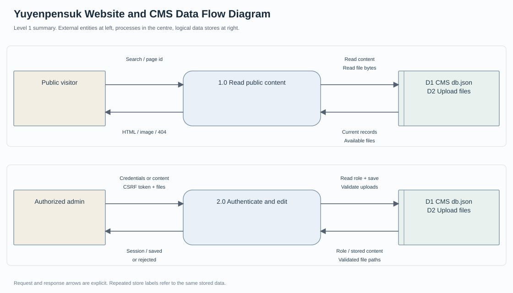

โครงการเว็บไซต์สำหรับบริษัท · 2026
อยู่เย็นเป็นสุข วิศวกรรม
เว็บไซต์บริษัทและระบบ CMS สำหรับจัดการสินค้า บริการ ข่าว และผลงาน
บทบาท / สิ่งที่ทำ
ประสานงานกับเจ้าของบริษัท รวบรวมความต้องการ ออกแบบ Flow และพัฒนาเว็บไซต์พร้อมระบบจัดการเนื้อหา
ขอบเขตที่นำเสนอ
- Admin Login
- สินค้าและบริการ
- ข่าวและผลงาน
- อัปโหลดรูปภาพ
- จัดเก็บข้อมูล CMS
เครื่องมือและวิธีการ
ผลลัพธ์ / สิ่งที่ส่งมอบ
ทดสอบ security policy ผ่าน; CMS ยังไม่ตรวจรับ
ขอบเขตและสถานะ
2 automated tests ผ่าน แต่ startup แบบ REQUIRE_EXISTING_DATA=1 หยุดเพราะไม่มีฐานข้อมูล CMS จริง; ไม่มี product JPG uploads จริงครบ และยังไม่ได้ทดสอบ admin flow
Data Flow และเอกสารวิเคราะห์

เอกสารใหม่จาก source baseline พร้อม Requirement, Workflow, Data Model และ UAT ที่ระบุสถานะตามจริง
กระบวนการของโครงการ
- ความต้องการเจ้าของบริษัท
- ออกแบบเว็บและ CMS
- พัฒนา
- ทดสอบและส่งมอบ